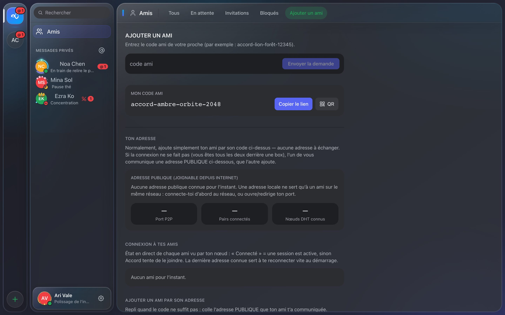
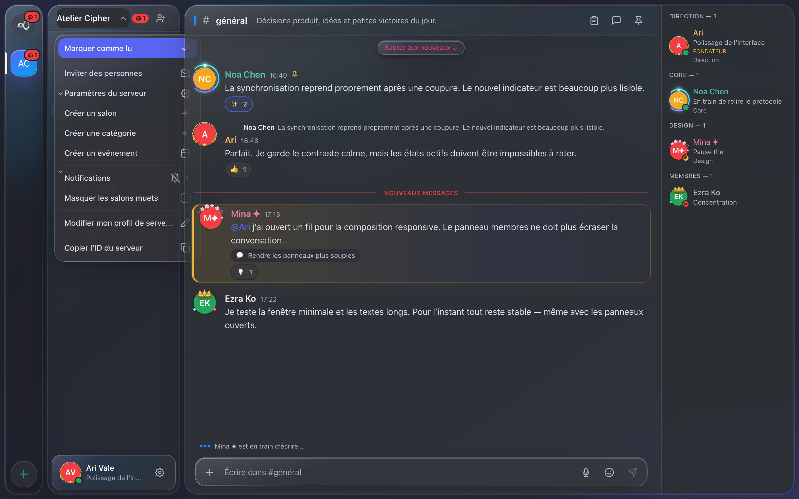
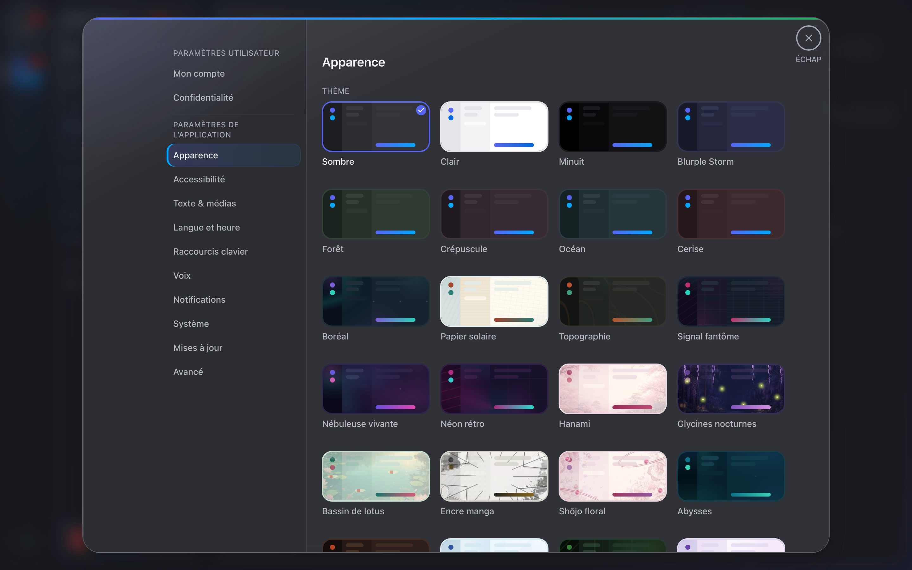

Prendre en main Accord
Accord n'a aucun serveur central : votre ami et vous vous connectez directement, d'appareil à appareil, chiffrés de bout en bout. Voici comment démarrer, pas à pas.
1. Installer l'application
Téléchargez la version correspondant à votre système depuis la page de téléchargement.
- macOS — ouvrez le
.dmg, glissez Accord dans Applications. Au premier lancement : clic droit sur l'app → Ouvrir (l'app n'est pas signée par un compte développeur Apple, macOS demande donc une confirmation la première fois seulement). Build universel : Apple Silicon (M1–M4) et Intel. - Windows — lancez l'installateur. Si SmartScreen s'interpose : Informations complémentaires → Exécuter quand même.
- Linux — rendez l'AppImage exécutable (
chmod +x) et lancez-la, ou installez le.deb.
2. Créer son identité
Au premier lancement, chacun crée son identité :
- Un mot de passe qui déverrouille l'app sur cette machine.
- Une phrase de récupération de 12 mots — c'est votre compte. Notez-la et gardez-la précieusement, hors ligne. Elle permet de restaurer votre identité sur un autre appareil ; personne, pas même vous, ne peut la régénérer.
- Un pseudo, modifiable à tout moment.
3. Se connecter à un ami
C'est l'étape clé du pair-à-pair. Accord tente d'abord tout seul d'ouvrir votre port (UPnP / NAT-PMP) et de trouver vos amis sur le même Wi-Fi. Souvent, il n'y a rien à faire. Sinon, voici les cas :
- Même réseau local (même Wi-Fi / box). En général, ça marche sans aucune configuration : vos deux apps se découvrent automatiquement.
- À distance, via Internet. L'un de vous ouvre Paramètres → Ajouter un ami et copie son adresse publique (
ip:port). Il l'envoie à l'autre (message, mail…), qui la colle dans « Ajouter un ami par son adresse ». Le compteur « pairs connectés » doit passer à 1. - Si aucune adresse publique n'apparaît. Votre box n'a pas ouvert le port automatiquement : redirigez le port UDP 48016 vers votre ordinateur dans l'interface de votre box, puis réessayez. Un seul des deux amis a besoin d'un port joignable.

4. Devenir amis
Une fois connectés au réseau :
- Chacun trouve son code ami dans Paramètres → Mon compte (6 mots + un nombre).
- Vous envoyez votre code à votre ami ; il l'ajoute et vous envoie une demande.
- Vous acceptez → vous êtes amis. Vous pouvez maintenant échanger messages, images et fichiers, et vous appeler en vocal.

5. Avatar, bannière, serveurs
Personnalisez votre avatar et votre bannière depuis Paramètres → Mon compte : ils se synchronisent automatiquement chez vos amis (les images voyagent en pair-à-pair, avec une barre de progression). Créez un serveur pour rassembler plusieurs amis autour de salons textuels et vocaux, avec des rôles et des permissions.

Envie d’un autre look ? Paramètres → Apparence propose plus de 24 thèmes — sombres, clairs, animés — plus un éditeur de thème personnalisé à partager par code.

6. Dépannage réseau
- « Pairs connectés » reste à 0 : le port UDP 48016 n'est joignable chez aucun des deux. Vérifiez la redirection de port chez l'hôte, ou testez d'abord sur le même réseau local pour confirmer que le reste fonctionne.
- Une image n'apparaît pas tout de suite : laissez quelques secondes — le fichier se télécharge en pair-à-pair. Le panneau Réseau confirme si l'ami est bien connecté.
- Le micro ne réagit pas : autorisez le microphone dans les réglages de confidentialité de votre système.
- Après une mise en veille : Accord retente automatiquement de rejoindre vos amis à leur dernière adresse connue au réveil et au démarrage.
7. Mises à jour
Depuis la 2.0, Accord se met à jour tout seul : une bannière prévient quand une nouvelle version sort, un clic l'installe. Les mises à jour sont signées cryptographiquement. Pour vérifier manuellement : Paramètres → Mises à jour.